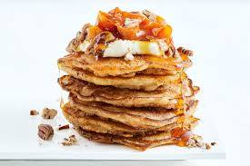

Carrot Cake Pancakes

Description
If you love carrot cake, you'll go nuts for these carrot cake pancakes.
This recipe uses a classic buttermilk batter, which is brightened with grated carrots, cinnamon, and spices.
The result truly tastes like a slice of your favorite dessert.
Ingredients
Carrot Cake Pancakes
- 1 ¼ cups all-purpose flour
- 1 ½ teaspoons baking powder
- 1 teaspoon ground cinnamon
- ½ teaspoon pumpkin pie spice
- ½ teaspoon baking soda
- ¼ teaspoon table salt
- 1 cup whole buttermilk
- ¼ cup packed light brown sugar
- 1 large egg
- 1 teaspoon vanilla extract
- ¾ cup finely grated carrot
- 3 tablespoons unsalted butter, melted, plus more for griddle
Topping
- 3 tablespoons golden raisins
- 3 tablespoons toasted chopped pecans or walnuts
- 3 tablespoons toasted unsweetened coconut flakes
- 1 tablespoon finely chopped candied ginger (Optional)
Steps
- Gather all ingredients.
- To make the pancake batter: Whisk flour, baking powder, cinnamon, pumpkin pie spice, baking soda, and salt together in a large bowl.
- Add buttermilk, brown sugar, egg, and vanilla; stir until just combined. Stir in carrots and melted butter until just combined. Set batter aside while you prepare the frosting and topping.
- To make the frosting: Whisk cream cheese, milk, powdered sugar, and vanilla together in a medium bowl until smooth. Set aside.
- To prepare the topping: Stir raisins, pecans, coconut, and ginger together in a small bowl. Set aside.
- Heat a large nonstick skillet or griddle over medium heat; grease with butter.
- Working in batches, scoop 1/4 cup batter per pancake into the skillet, being sure not to overcrowd it. Cook until bubbles begin to form on surface of pancakes and edges look dry, 2 to 3 minutes. Flip, and cook until fluffy and slightly firm, about 1 minute. Repeat with remaining batter, adding butter and adjusting heat as needed.
- Divide pancakes evenly among 4 plates; drizzle evenly with frosting and sprinkle evenly with topping.